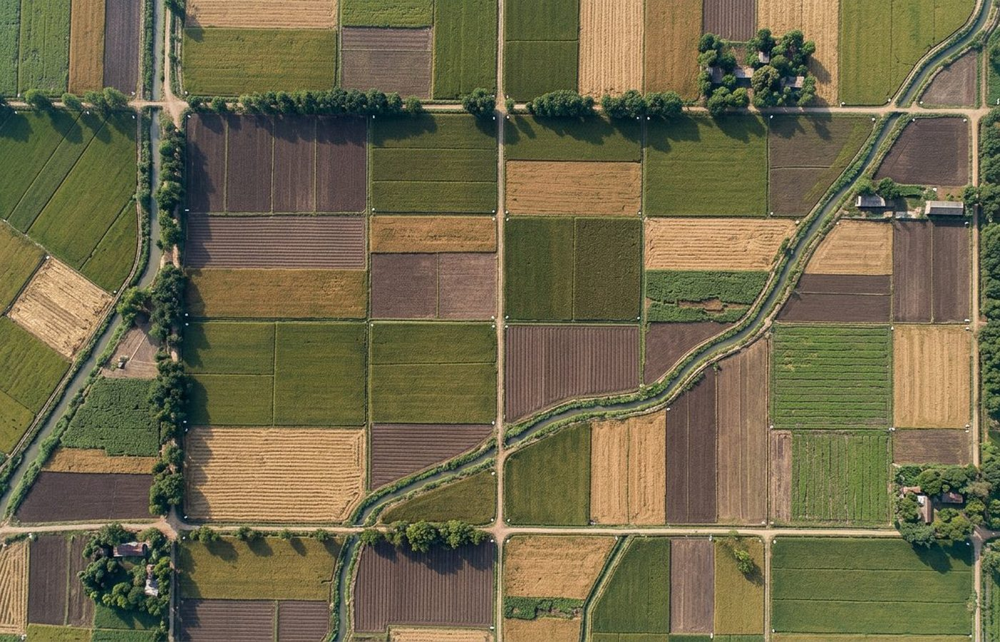
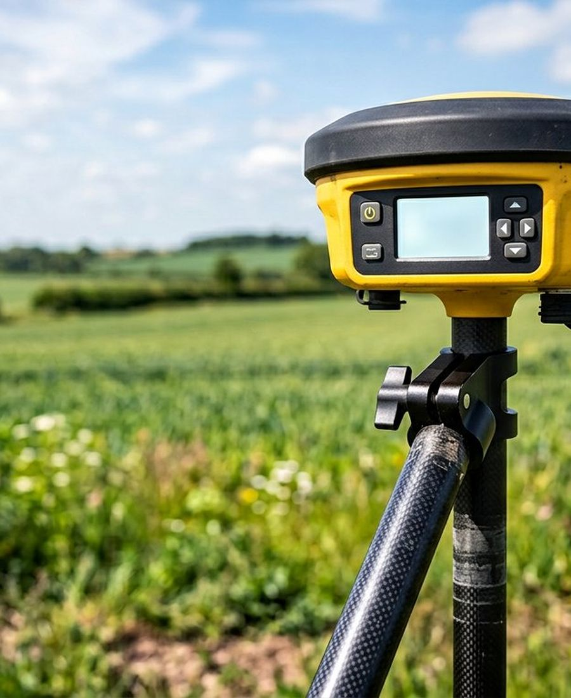
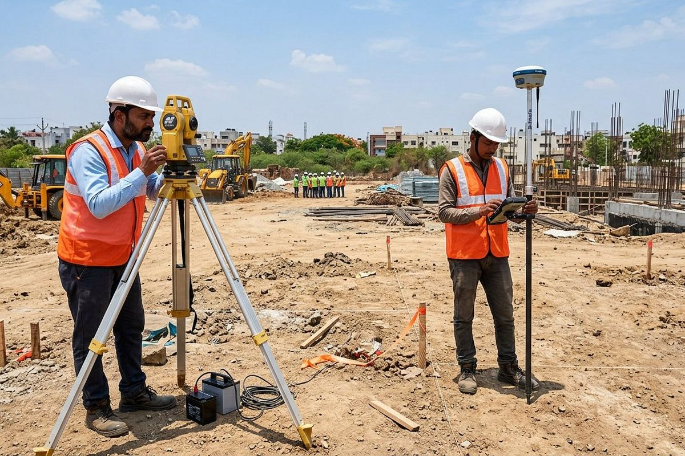
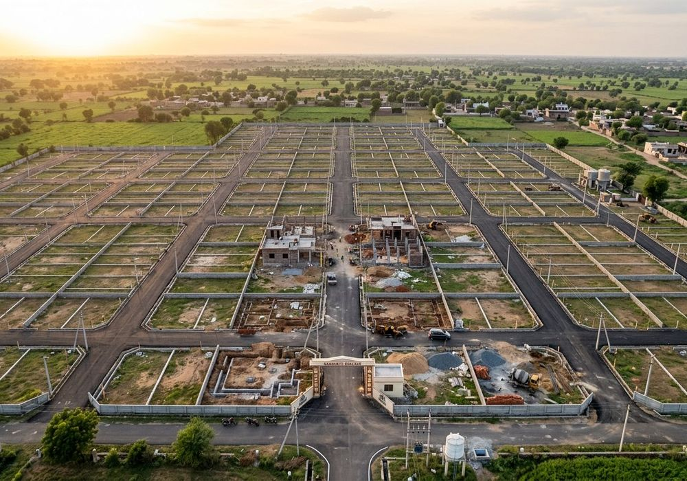
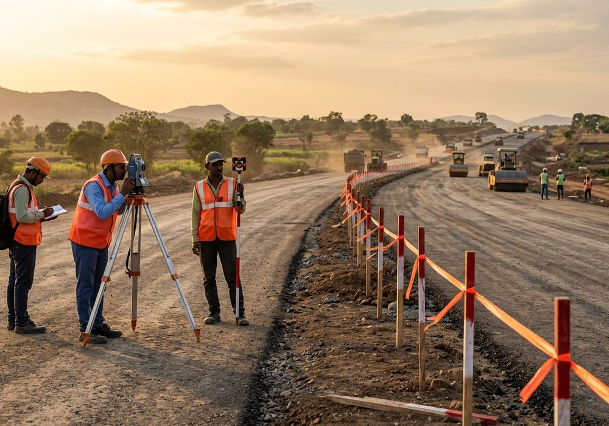
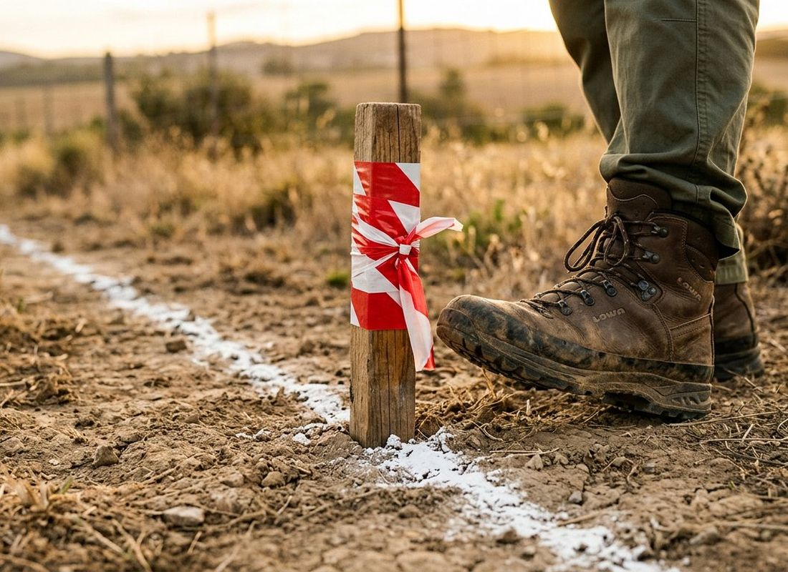
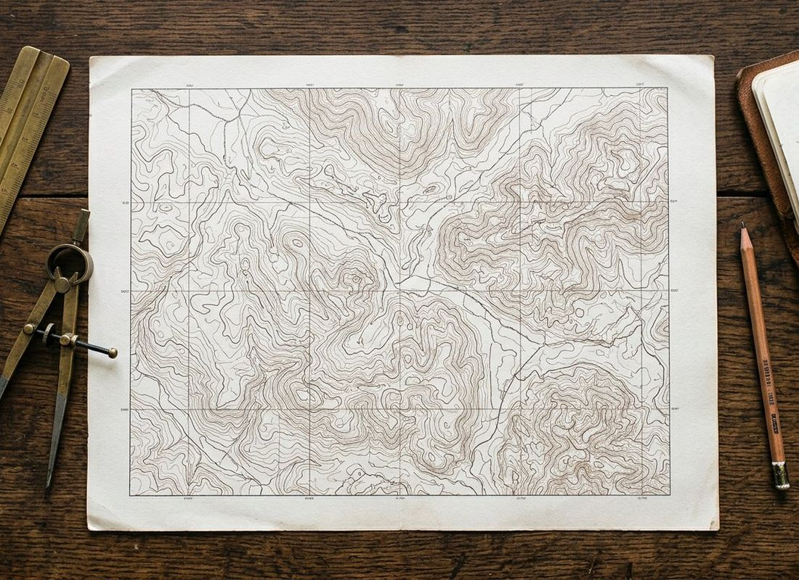
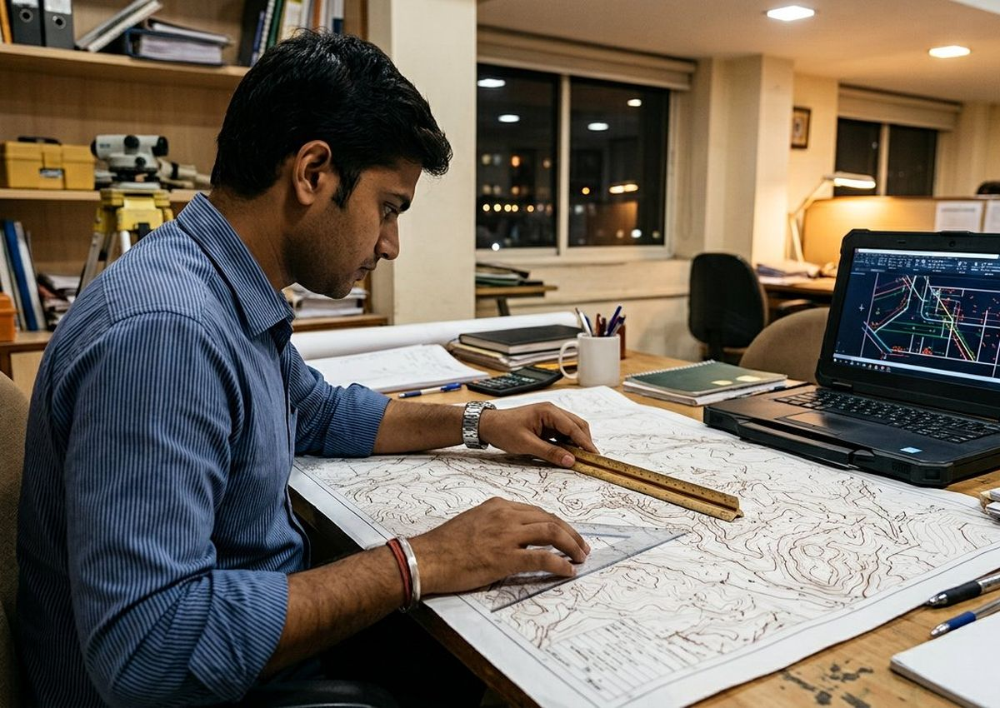

Land & Plot Survey
Exact area, shape and boundary of your parcel — measured on ground and delivered as a signed plan you can show anywhere.
Field-proven surveys of plotsboundariescontoursalignmentslayouts
Alpha Land Surveys is a Delhi-NCR land surveying firm. From a single plot demarcation to full drone-based topographic mapping — every job leaves our desk with field notes, a signed plan and coordinates you can actually build on.


Numbers from our field book — updated every quarter.
Accuracy depends on method: a plot needs a total station, a 40-acre layout needs RTK and a drone. We pick the instrument after seeing the site — and say so upfront.
Exact area, shape and boundary of your parcel — measured on ground and delivered as a signed plan you can show anywhere.
Corner pegs, chalk lines and a physical boundary you can stand on — so there is no dispute left to argue about.
Centimetre-level coordinates tied to the state grid — reliable control for layout, roads, boundaries and planning approvals.
Orthomosaic, DSM/DTM models and volumetric analysis for large parcels — weeks of ground work finished in days.
Contour plans at 0.25–0.5 m intervals — everything your architect, structural engineer and contractor need for levelling.
Plot lines, roads, columns and building corners marked on the ground before a single brick is laid.
Also available: levelling & cut-fill, road alignment, volume & stockpile measurement, plot subdivision, demarcation drawings for banks and courts.
Most survey complaints come from two things — instruments that are not calibrated, and drawings that do not match the ground. We fix both by keeping everything in-house and cross-checking every plan before it leaves the office.

Most residential jobs finish in 1–3 working days. Layouts and drone work take longer — you get a written timeline before we start.
Share the plot details, khasra/registry copy and what you actually need — on call or WhatsApp.
We walk the site, tie control points and confirm the scope on ground before quoting.
Total station, RTK GNSS or drone — chosen by area and accuracy, not by convenience.
Drawing prepared and cross-checked against the field book, with computed areas verified twice.
DWG/PDF plan handed over — and your boundary or layout marked on the ground if you need it.
Hover (or tap) any card to see the scope, deliverables and how it ended.



No verbal “ho gaya” reports. Every job closes with documents filed properly — the same set whether it is a 100 sq.yd plot or a 40-acre layout.
Software we work in: AutoCAD · Civil 3D · QGIS · Agisoft Metashape.

“All four corners were pegged in a single visit, and the signed plan came the next morning. The neighbour's claim quietly ended there.”
“Their contour plan at 0.25 m matched exactly what our contractor found during excavation. That never happens on the first drawing.”
“Twelve kilometres of alignment, cross-sections on time, and the coordinate list plugged straight into our CAD without a single edit.”
Our teams are on the road daily. If your site is inside this map — or just outside it — send the location and we will confirm the visit slot on WhatsApp.
Ek normal residential plot (100–500 sq.yd) ka kaam ek hi visit me ho jaata hai — pegs aur chalk line usi din. Signed plan aur DWG next working day tak. Bade layouts aur drone jobs me 2–5 din.
Registry / sale deed, khasra ya mutation copy, aur purana site plan agar hai. Bas photocopy ya phone se photo kaafi hai — documents hum wapas kar dete hain.
Site visit + area + kaam ki type ke hisaab se fixed quote. Quote pehle, kaam baad me — koi hidden per-visit charge nahi. Border cases (disputed ya kaccha rasta wale plots) me hum quote se pehle site dekh lete hain.
Aapki plan signature aur stamp ke saath aati hai, saath me coordinate list — bank valuation, loan file aur registry ke reference me ye normally accept hoti hai. Court matter me hum measurement witness ke roop me bhi available rehte hain.
Jab area 1 acre+ ho, stockpile volume nikalna ho, ya poora layout/master plan banwana ho — drone 10x fast hota hai aur orthomosaic se sab kuch ek nazar me dikh jaata hai. Chhoti plots ke liye total station better aur sasta padta hai.
Base Rohini me hai aur daily NCR me kaam hota hai. Uske bahar bhi jaate hain — Haryana, Punjab, UP, Rajasthan me 200 km radius tak. Location WhatsApp kar do, visit slot confirm kar denge.
Plot ka size, location aur kya chahiye — bas itna bata do. Hum visit slot aur fixed quote WhatsApp par bhej dete hain.
Sector-24 Market, Rohini, Delhi 110085
(demo address — update before launch)

Visit slot WhatsApp par confirm hota hai — 1–3 din me kaam poora.
Bata do site kahan hai; hum visit, measurement aur plan ka poora plan bhej dete hain.